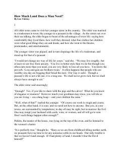

HMInsonning ochko'zligi va yerga bo'lgan cheksiz hirsining fojiali oqibatlari haqidagi hikoya.
Ushbu mashhur hikoyada dehqon Paxomning yerga bo'lgan cheksiz hirs va ochko'zligi tasvirlanadi. Asar insonning moddiy boylikka intilishi va uning oqibatlari haqida chuqur falsafiy xulosa beradi.